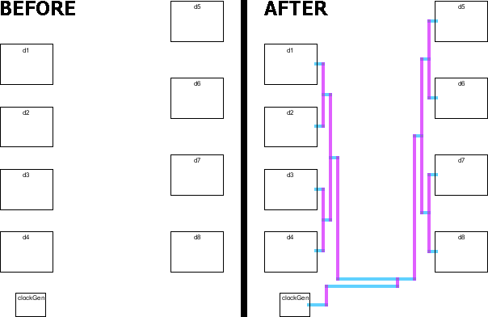

The clock router connects multiple clocked cells to a single clock generator,
ensuring a constant wire length to each clocked cell.
It does this by building tree structures in user-specified routing channels,
adding serpentine wires if necessary to balance the length.
The router can also insert balanced repeaters
and can route multiple, independent trees, all with the same wire lengths.
The Clock Router is run with the Clock Routing... command (in menu Tools / Routing).
The command prompts for a command file that specifies the clock routing task.
The command file contains directives that describe the source and destination nodes,
the routing channels, and other routing parameters.
These are the directives that can appear in the command file:
- UNITS describes the scale to be applied to distances in this file. It has these parameters:
- MICRONS specifies the number of units (in this file) per micron.
For nanometer design, this value should be 1000.
- START-PATH declares the beginning of a synchronized path.
Since multiple trees can be routed with the same length wires in each,
the START-PATH and END-PATH directives are used to mark the individual trees.
- END-PATH declares the end of a synchronized path.
- SOURCE describes the clock-generator cell. It has these parameters:
- NODE specifies the cell name that generates clock signals.
- PORT specifies the port on the clock generator cell to connect.
- STUBX / STUBY (optional) is the X/Y delta of a "stub" arc that will be drawn out of the clock generator port (in UNITS).
- DESTINATION describes the cells that are being clocked. It has these parameters:
- NODE specifies the cell name for instances being clocked.
- PORT specifies the port on the clocked instances to connect.
- STUB (optional) is the length of a "stub" arc that will be drawn out of the clocked instances (in UNITS).
- LAYERS describes the horizontal and vertical layers to use for routing. It has these parameters:
- HORIZONTAL specifies the metal layer number for horizontal arcs. "1" means Metal-1, etc.
- VERTICAL specifies the metal layer number for vertical arcs. "1" means Metal-1, etc.
- HORIZONTAL-SCALE (optional) is a width-scale for horizontal arcs. The default value is 1, but anything
larger will cause horizontal arcs to scale by that factor over their default width.
- VERTICAL-SCALE (optional) is a width-scale for vertical arcs. The default value is 1, but anything
larger will cause vertical arcs to scale by that factor over their default width.
- CHANNEL describes a routing channel. It has these parameters:
- NAME specifies the name of this routing channel.
- IN specifies the side of the channel that has the input (from the clock generator).
- OUT specifies the side of the channel that has the output (to the clocked instances).
After the parameters comes a list of destinations.
The destinations can be cell instance names for the clocked instances,
or it can be the name of a previous routing channel.
- REPEATER describes rules for placing repeaters. It has these parameters:
- CELL specifies the cell to be used as a repeater.
The cell must have exactly one input port and one output port.
- DIST specifies the distance between repeaters (in UNITS).
- CONNECT specifies the metal layer number to use when approaching the ports of the repeater cell.
- INSTNAME specifies an instance name to give repeater cells (default is CLK_BUF).
- NETNAME specifies a network name to give repeater networks (default is CLK).
- ROW describes rules for grid locations of repeaters. Unlike the other directives,
the ROW command follows the DEF syntax, allowing blocks of ROW specifications to be
copied directly from a DEF file.
The ROW statement has this structure:
ROW Name UNIT X-loc Y-loc Orient DO X-repeat BY Y-repeat STEP X-step Y-step ;
Where:
- Name is the name of this row (ignored).
- X-loc / Y-loc is the coordinate (in UNITS) of the start of the row.
Coordinates define the lower-left corner of the repeater cell instance.
- Orient is the orientation of the repeater placement.
Possible orientations are N (no rotation), S (180 degree rotation),
E (270 degree rotation), and W (90 degree rotation).
If the letter F preceeds the orientation (for example FN) then the orientation
is flipped after rotation.
- X-repeat / Y-repeat is the number of times in X or Y that the repeater may appear in the row.
- X-step / Y-step is the distance (in UNITS) along the row of each step.
Here is an example of clock routing. This is the command file:
# Clock routing command file
START-PATH
SOURCE NODE=clockGen PORT=clkOut STUBX=25 STUBY=0
DESTINATION NODE=destCell PORT=clk STUB=10
LAYERS HORIZONTAL=1 VERTICAL=2
CHANNEL NAME=a IN=down OUT=left d1 d2 d3 d4
CHANNEL NAME=b IN=down OUT=right d5 d6 d7 d8
CHANNEL NAME=whole IN=left OUT=up a b
END-PATH
Note that there are two CHANNELs named "a" and "b" that connect the two columns of four cells.
Then there is a third CHANNEL ("whole") that connects the "a" and "b" channels.
